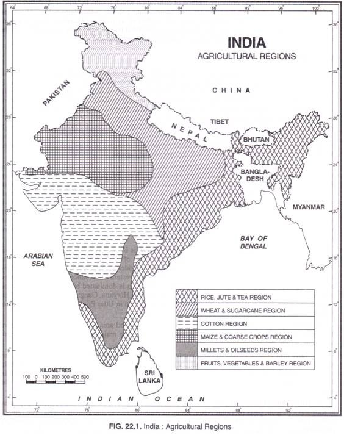

This vast region includes lowlands, valleys and river deltas in the states of Assam, Arunachal Pradesh, Tripura, Meghalaya, West Bengal, Orissa, northern and eastern Bihar parts of Jharkhand and Chhattisgarh and Tarai region of Uttar Pradesh. The rainfall vanes from 180 to 250 cm. Rice are the predominant crop due to fertile alluvial soils, abundant rainfall and high summer temperatures. Jute is mainly grown in the Hugli basin of West Bengal but some areas have been brought under jute cultivation in Assam, Meghalaya, Tripura, Orissa and Tarai region of U.P. Tea is mainly grown in Assam, Darjeeling and Jalpaiguri areas of West Bengal and Tripura. Sugarcane and tobacco are grown in Bihar. Coconut is grown in coastal areas. Mango, pineapple, betal leaves, bananas, jack fruits, and oranges are the main fruit crops.
This region comprises Bihar, Uttar Pradesh, Punjab, Haryana, Western Madhya Pradesh and north eastern Rajasthan. Most of the areas have rich fertile alluvial soils with some parts having black and red soils. Rainfall is moderate, large part of which is caused by south-west monsoons in summer. Some rainfall is caused by western disturbances in winter. Irrigation is a vital input in drier areas. The main wheat belt of India extends over Punjab, Haryana, Ganga-Yamuna doab of Uttar Pradesh and north-eastern Rajasthan. Sugercane is mainly grown in Uttar Pradesh and contiguous parts of Bihar. Rice, pulses and maize are the other important crops.
It spreads on the regur or black cotton soil area of the Deccan plateau, where the rainfall varies from 75 to 100 cm. Obviously, cotton is the main crop but jowar, bajra, gram, sugarcane, wheat, etc. are also grown.
Western Rajasthan and northern Gujarat are included in this region. The rainfall is scanty and is normally below 50 cm. Agriculture is possible only with the help of irrigation. Maize is mainly grown in the Mewar plateau where wheat and ragi are also produced. In the southern part, rice, cotton and sugarcane are grown. Bajra and pulses are grown throughout the region.
This region includes areas of poor soils and broken topography in Karnataka plateau, parts of Tamil Nadu, southern Andhra Pradesh and eastern Kerala. The rainfall varies from 75 to 125 cm. The millets include bajra, ragi and jowar while the oilseeds grown are groundnut and caster. Pulses are also grown. Mangoes and bananas are important fruit crops.
This region extends from Kashmir Valley in the west to Assam in the east. The rainfall varies from 60 cm in the west to 200 cm in the east. Apple, peach, cherries, plum, apricot are grown in the west while oranges are important in the east. Besides, rice, maize, ragi potatoes, chillies and vegetables are also grown.
